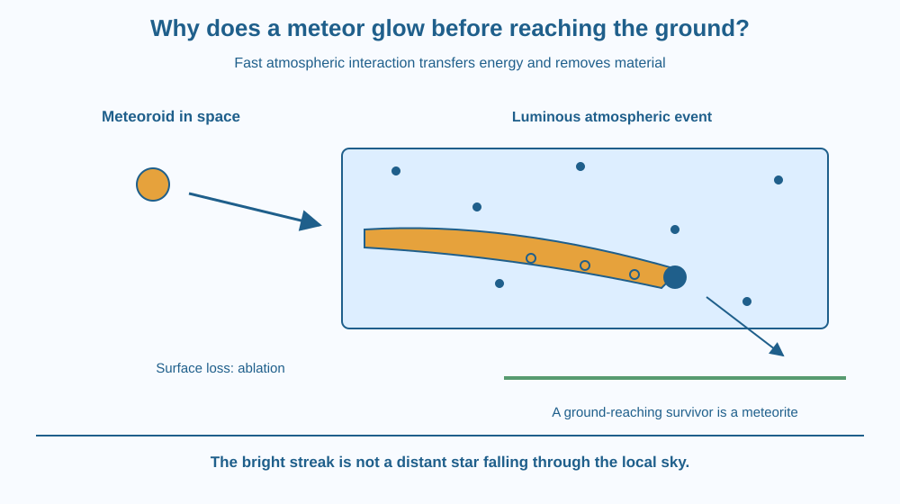

Explain how a fast incoming space particle can produce a luminous atmospheric event. Distinguish meteoroid, meteor and meteorite, and identify ablation. Replace the idea of a falling star with an account of energy transfer, heated gas and material loss.
A bright streak crosses a night-sky photograph. People call it a shooting star, but an actual star has not rushed through the local atmosphere. A much smaller incoming object can create a conspicuous luminous trail.
Why does it become bright before reaching the ground? The object moves rapidly relative to atmospheric gas. Interactions transfer kinetic energy into heating, excitation and other changes around its path.
The visible light is an event involving the object and surrounding gas, not simply a tiny star with its own internal stellar energy source.
A meteoroid is a small natural object in space. When its atmospheric passage produces a luminous event, that event is a meteor. A surviving piece that reaches the ground is a meteorite. These words distinguish the object, the observed event and a possible surviving fragment.
Incoming material can move very rapidly relative to atmospheric gas. The detailed flow depends on size and atmospheric conditions. Collisions and, where applicable, strong compression and shock structures transfer energy through the surrounding region.
Gas can become hot and excited, and material from the object's surface can enter the flow. Emission from these materials contributes to the visible streak. The light is not necessarily produced only by one glowing solid surface.
Some incoming kinetic energy becomes internal energy of gas and material. This is not an unlimited new energy source: the object's motion and the flow interactions provide the energy budget. Drag and fragmentation can change the object's subsequent motion.
Ablation is loss of surface material through processes associated with the intense entry environment, including heating and removal of material. A meteoroid can shrink, fragment or vaporise along its path. Different objects do not all behave identically.
The everyday phrase friction with air is a rough introduction, but picturing slow rubbing between two familiar solid surfaces is incomplete. High-speed gas dynamics, collisions and energy transfer are central. Compression heating is especially relevant in suitable high-speed flow regimes.
Many luminous events do not leave a recognisable object on the ground. Others produce surviving meteorites. A bright appearance alone does not tell you the starting mass, exact composition or whether a fragment will survive.
The event is different from a comet tail. A comet can release material shaped by solar influences in space; a meteor's light comes from atmospheric entry. It also differs from the colour of a distant star. The lesson does not repeat orbital gravity or stellar spectra as its core explanation.
Draw a moving object entering a region containing gas symbols. Add arrows showing energy transferred from relative motion into the surrounding gas and surface. Draw a luminous region along the path.
Then reduce the size of the object and add released material behind it. Label this ablation rather than automatically calling every lost piece a meteorite. Only a surviving fragment that reaches the ground gets that name.
Keep the three vocabulary labels on separate parts of the sequence. This prevents a common sentence in which a meteor is treated as both the light and an unchanged rock sitting on the ground with no distinction.
The SVG follows an incoming meteoroid into an atmospheric region, where heated gas and ablated material produce a luminous path. A smaller possible surviving fragment is shown farther along, with a separate ground-reaching label.
Arrows identify energy transfer and surface material loss. The surrounding gas is visible only as schematic symbols. The illustration exaggerates sizes and does not provide a real altitude, temperature or entry-speed estimate.
A comparison note separates meteors from stars and comet tails. The picture includes a possible survivor, not a claim that every observed streak must produce a meteorite.

Meteor photographs and monitored sky-camera records can provide information about a fast event that is difficult to inspect directly. Several observing viewpoints can help reconstruct a path, but a single bright image does not reveal every physical property.
Indian astronomy clubs and educational sources may discuss meteor showers. A shower is associated with a population of incoming particles, not a group of actual stars falling from the sky.
Do not travel to a suspected impact site, touch unknown debris or assume a found rock is a meteorite. This lesson uses images and models only. Ordinary unfamiliar material should be left for appropriate adult or expert assessment.
Use paper and two colours. No heating, fast projectiles or outdoor night activity is needed.
The diagram is a process sequence, not a scale drawing. Do not assign numerical speed or temperature from the colour of your pencil. Ask a partner which label names the visible event and which names the possible piece collected only after survival to the surface.
Why can the brightest part of the visible event involve surrounding gas as well as the object? Use energy transfer and emission in your explanation rather than describing a miniature star.
Now imagine the object fragments high in the atmosphere. Explain why the light can change while the original body is no longer one intact piece. A recorded streak is evidence of a process, not necessarily a portrait of one unchanged solid.
What is a meteor in the precise sequence used here?
Answer: B — Meteor names the visible event associated with atmospheric passage.
What does ablation describe in this context?
Answer: A — The intense entry environment can remove surface material and reduce the object.
A fragment survives entry and reaches the ground. What is it called?
Answer: C — A surviving ground-reaching piece is a meteorite.
Create a labelled three-stage sequence distinguishing meteoroid, meteor and meteorite. Add ablation and a route in which nothing recognisable reaches the ground.
Include one correction to the phrase shooting star. Your account should connect fast atmospheric interaction to light without claiming that every visible event has the same temperature or that every suspected ground rock can be identified from appearance alone.
The bright streak is partly a record of what happened to the gas and released material along the path. It can be much more visible than the original object. A striking image therefore need not mean that a correspondingly large intact rock remains available to collect afterwards.
A meteor is a luminous atmospheric event powered by fast interaction with gas; ablation removes material, and only surviving ground-reaching pieces are meteorites.